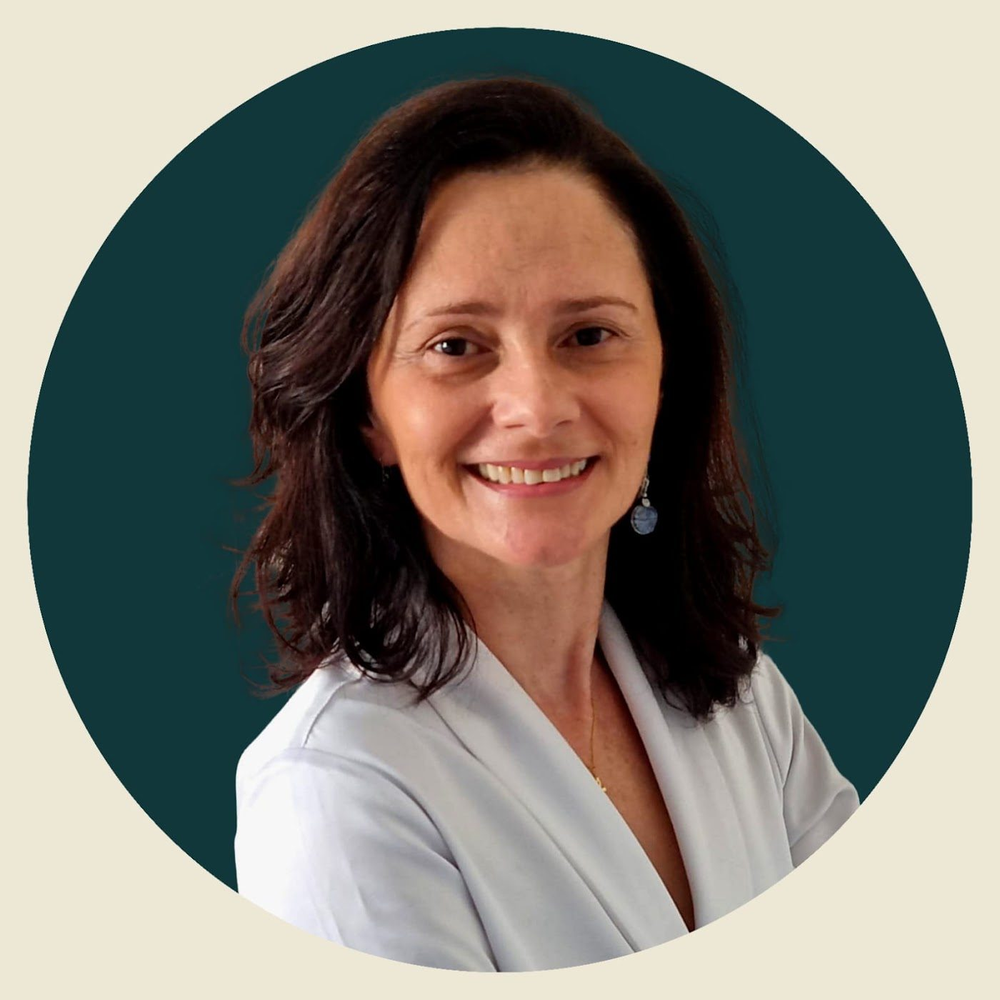
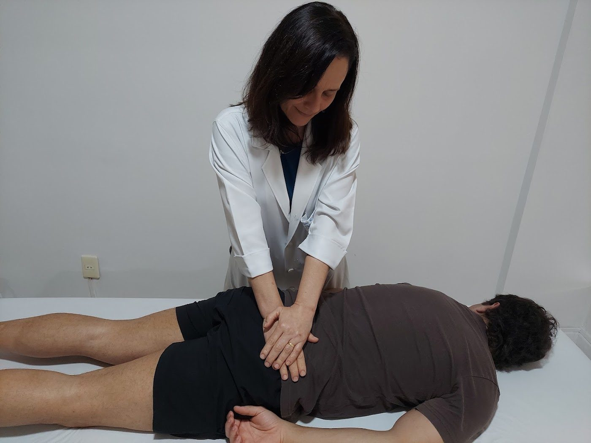
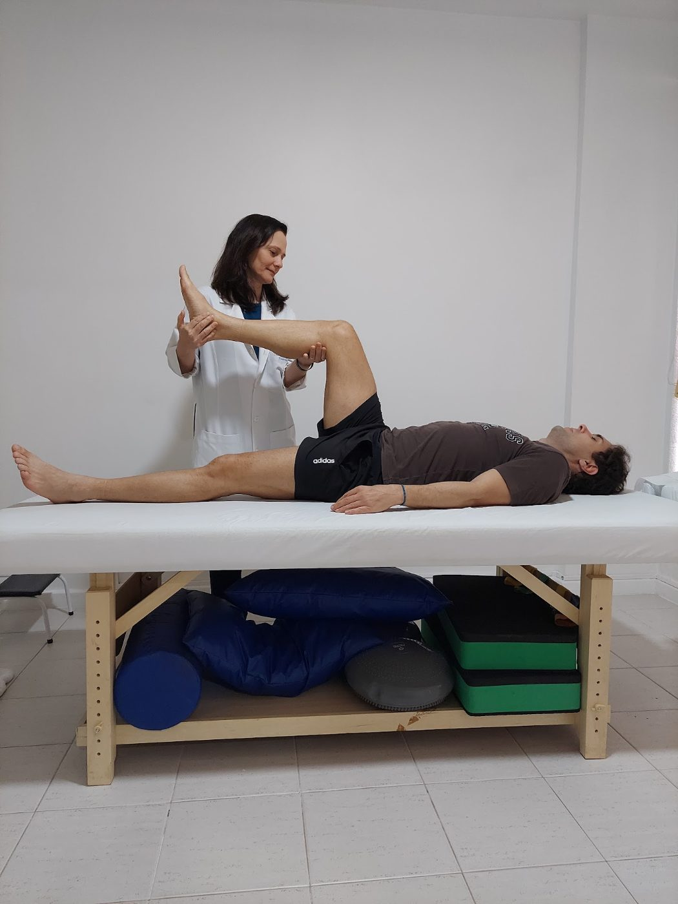
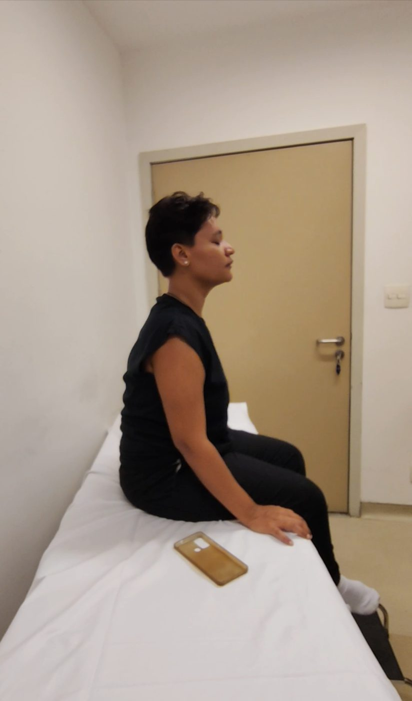
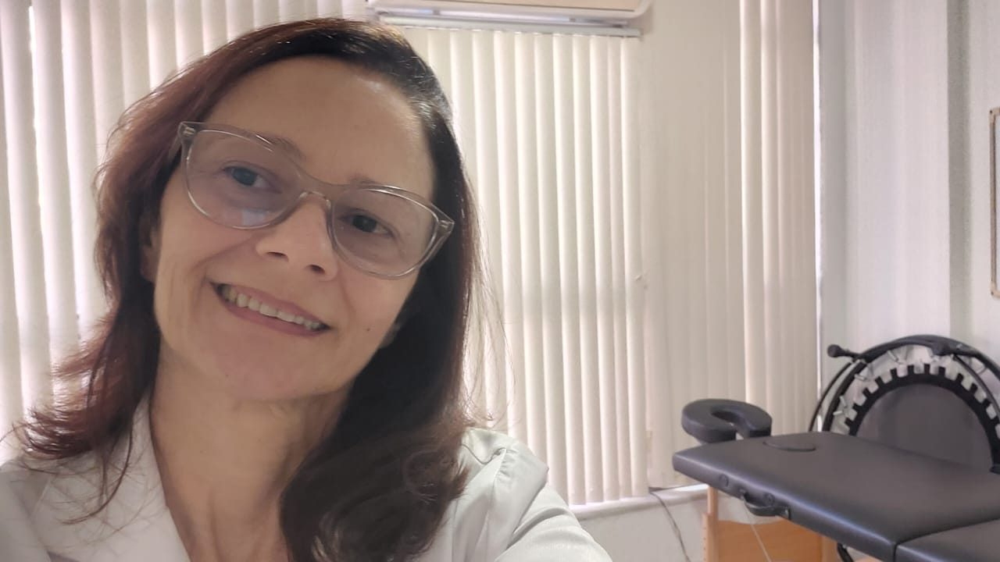
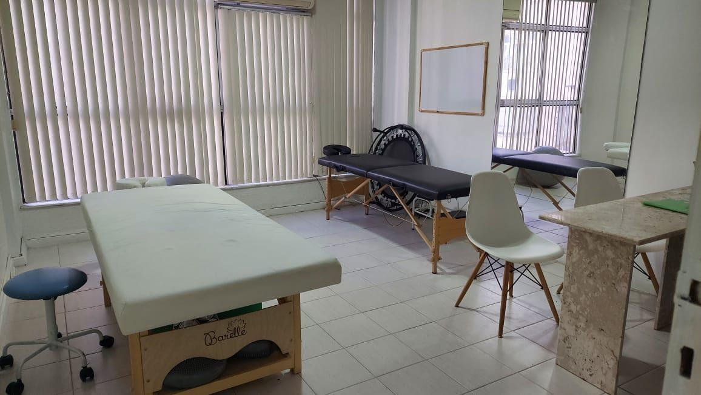
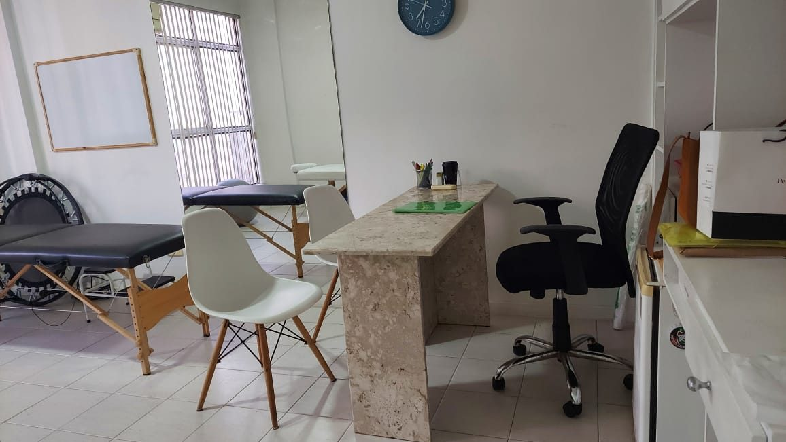
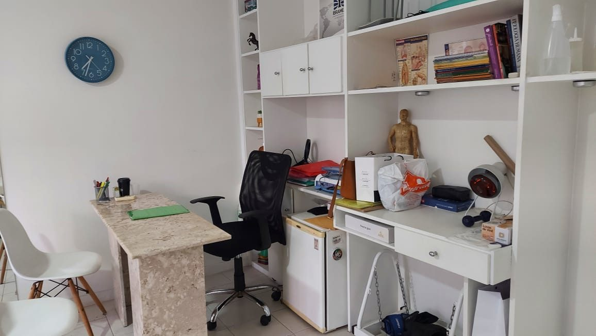
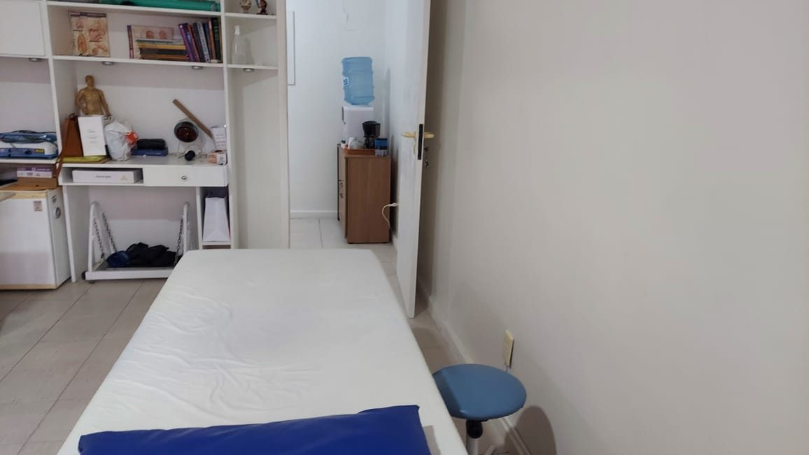

“O que mais me chamou atenção foi o cuidado em entender que a dor nem sempre vem só do ponto onde sentimos — ela avalia o corpo como um todo, de forma completa e integrada. […] Ela orienta exercícios e atividades para serem feitos em casa, o que faz toda a diferença na evolução do tratamento.”
Fisioterapia em Icaraí · Niterói
Viva sem dor, viva melhor.
Fisioterapia para dor na coluna e lombar, com atendimento individualizado e humanizado. Cada tratamento começa por uma avaliação completa, para cuidar da causa da dor e não só dos sintomas.
- 37anos de experiência
- 5,048 avaliações no Google
- RPGe Biomecânica Corporal

5,0
48 avaliações no Google
Tratamentos
Dores musculares e articulares
Fisioterapia traumato-ortopédica e funcional para adultos e adolescentes a partir de 14 anos.
Coluna e lombar
Dor lombar (lombalgia), dor cervical, hérnia de disco e outras doenças da coluna.
Ombro
Capsulite adesiva (ombro congelado), tendinite e perda de mobilidade.
Joelho e quadril
Dores no joelho e no quadril e recuperação após lesões, como a do LCA.
Pés
Fascite plantar e dores que limitam o caminhar.
ATM
Fisioterapia para a articulação temporomandibular.
Braços
Dores musculares e articulares nos braços.



Abordagem
O corpo avaliado como um todo
A dor nem sempre vem só do ponto onde é sentida. Por isso, o tratamento considera a postura, os movimentos e as compensações do corpo.
- Avaliação individualizadaHistórico, postura, movimentos e possíveis compensações corporais.
- Tratamento direcionadoTécnicas manuais, exercícios terapêuticos e recursos como o laser, respeitando a tolerância à dor e os limites de cada paciente.
- Exercícios para casaOrientações para continuar o tratamento no dia a dia e evoluir mais rápido.

Sobre
Prazer, sou a Cristiane
Fisioterapeuta graduada pela Universidade Católica de Petrópolis em 1988, com 37 anos de experiência em fisioterapia integrativa. Busco sempre aprimorar meus conhecimentos e técnicas para oferecer o melhor tratamento a cada paciente.
- EspecializaçãoBiomecânica Corporal e RPG (Reeducação Postural Global)
- ExperiênciaTraumato-ortopédico-funcional, doenças da coluna e dores músculo-articulares
“Recuperar o movimento é recuperar a liberdade de realizar as atividades do dia a dia.”
@cristianenguimaraes
Saúde do trabalhador
Perícia fisioterapêutica
Além da clínica, atuo como perita judicial, com avaliação fisioterapêutica especializada para processos trabalhistas e previdenciários.
Perícia judicial
Avaliação técnica da capacidade funcional para a Justiça do Trabalho.
Ações previdenciárias
Avaliação fisioterapêutica como prova técnica em processos contra o INSS.
Doenças ocupacionais
Análise de dores e lesões relacionadas ao trabalho e orientações de prevenção.
Consultório
Atendimento em Icaraí
Consultório particular na Rua Gavião Peixoto, em um ambiente tranquilo e preparado para o seu tratamento.




Depoimentos
Quem já tratou, recomenda
5,0 · 48 avaliações no Google“Gostaria de expressar minha profunda gratidão pelo alívio que me proporcionou, ao desconforto e dor horrível que eu sentia por causa de uma capsulite adesiva no ombro direito. Após algumas sessões de fisioterapia, sinto-me ótima.”
“A dra Cristiane é uma fisioterapeuta excelente profissional experiente humanizada que fez-me perceber o meu corpo como um todo. Em uma sessão descobri a origem da dor que me limita e com o trabalho fisioterápico estou aliviada.”
“Faço fisioterapia da ATM com a Cristiane há mais ou menos um mês, o tratamento é extremamente eficaz. Obtive resultado já na primeira semana. Uma excelente profissional!”
“Eu estava com dores insuportáveis no pé decorrente à inflamação denominada fascite plantar e com sessões de fisioterapia feitas por essas mãos mágicas já consigo caminhar normalmente e voltei para minha rotina.”
“A Cristiane é uma excelente profissional! Atenciosa, generosa, paciente, ética, cuidadosa, responsável com o trabalho que faz. O tratamento recebido está sendo extremamente eficaz! Mas lembrem-se: o profissional não pode trabalhar sozinho! Façam o dever de casa que com certeza o resultado será surpreendente.”
Contato
Chamar no WhatsApp
Agende sua avaliação
Atendimento particular, com hora marcada. Chame no WhatsApp para encontrar o melhor horário.
WhatsApp(21) 98765-6781
EndereçoR. Gavião Peixoto, 148 – Sala 1005
Icaraí, Niterói – RJ, 24230-101
Icaraí, Niterói – RJ, 24230-101
Horários
Seg a Sex9h às 17hSábado9h às 12hDomingoFechado
Instagram@cristianenguimaraes